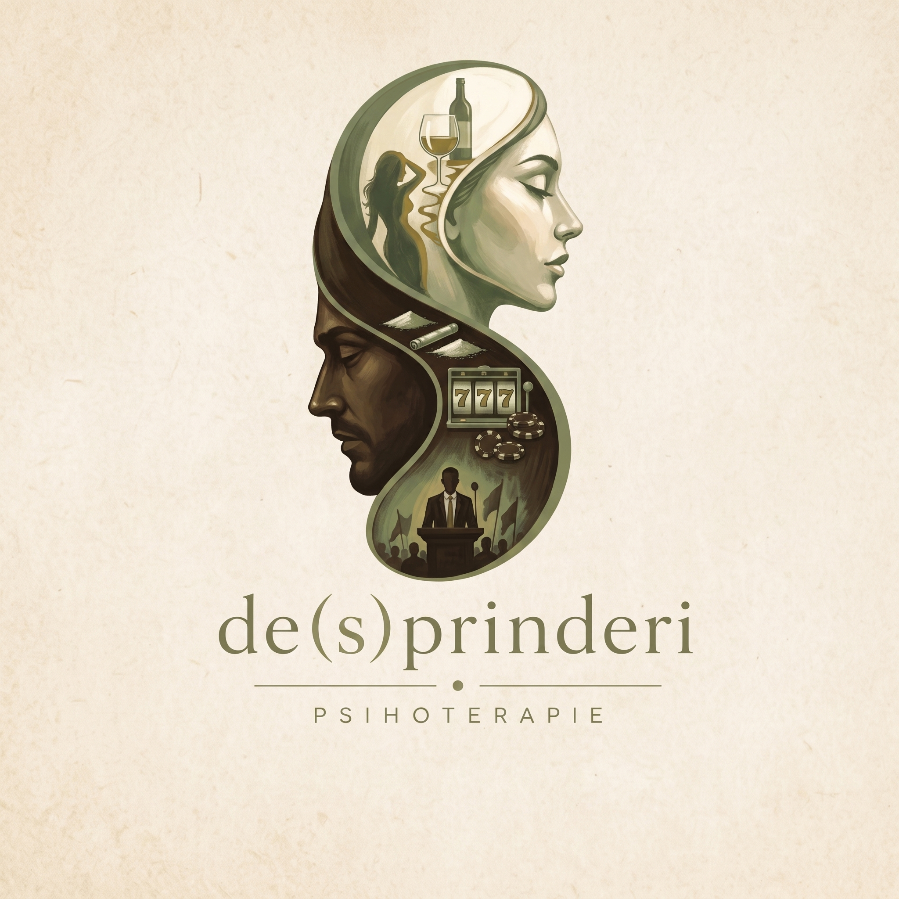

Prima clinică outpatient din București specializată exclusiv în adicții. Echipă integrată, abordare dovedită, confidențialitate garantată.

din populație raportează consum recreațional de substanțe — în creștere față de 10,7% în 2023.
adulți trece printr-o adicție comportamentală — gambling, ecrane, mâncat compulsiv, muncă.
clinici outpatient specializate în adicții, cu echipă integrată, în București. Golul există.
abandonează tratamentul fără continuitate ambulatorie după externare. Exact ce oferim noi.
Adicția nu dispare după internare. Dispare printr-un proces lung, cu suport constant — exact ce lipsea din peisajul bucureștean.
Sectorul public oferă urgențe și internare, dar lipsește continuitatea. Centrele rezidențiale private sunt în afara Bucureștiului și inaccesibile ca preț. ONG-urile fac voluntariat valoros, dar nu pot oferi terapie privată structurată.
de(s)prinderi completează lanțul terapeutic: intră acolo unde spitalul iese — cu un program ambulatoriu structurat, o echipă multidisciplinară și o abordare bazată pe evidență clinică.
Alcool, tutun, droguri recreaționale, medicamente. Interviu motivațional și suport psihiatric.
Gambling, ecrane, pornografie, social media. La fel de reale, mai puțin recunoscute.
Mâncat compulsiv, restricție, binge eating. Abordare integrată terapie-nutriție.
Codependență, relații toxice, atașament anxios. Cele mai dificil de recunoscut.
Workaholism, burnout cronic, perfecționism. Adicții valorizate social care distrug în tăcere.
Dacă cineva drag are o adicție, ai nevoie de suport la fel de mult. Terapie pentru codependenți.
Prima ședință de 50 de minute. Înțelegem situația, stabilim dacă ne potrivim, construim un plan.
8–12 săptămâni, psihoterapie, interviu motivațional, nutriție și psihiatrie cât e nevoie.
Ședințe lunare și grup de suport vineri. Progresul se pierde fără continuitate.
Tu decizi când ești gata. Fără angajamente pe termen nedefinit, fără presiune.
Ședințe 1-la-1 cu un psihoterapeut specializat în adicții. Lucrăm în ritmul tău.
Metoda cu cea mai solidă bază de evidență. Lucrăm cu ambivalența ta, nu te convingem.
Evaluare și suport medicamentos când e necesar. În echipă cu terapeutul, nu izolat.
Pentru adicțiile alimentare și alcool. Nutriție și terapie care lucrează împreună.
Vineri 17:00–18:30, ghidat de terapeut, 6–10 participanți. Prima participare gratuită.
Toate serviciile disponibile și în format video. Oriunde te-ai afla, același preț.
20 de ani în management înainte de a deveni terapeut. Lucrează cu adicții comportamentale, relaționale și burnout.
Specializat în adicții comportamentale și terapie de familie. Lucrează cu sistemul, nu doar cu individul.
Nutriție comportamentală și clinică — adicțiile alimentare și deficiențele nutriționale ale alcoolismului.
„Am venit cu scepticism total. Plecat după 4 luni cu o relație cu alcoolul pe care n-o credeam posibilă."
„Soțul meu refuza orice ajutor. Am venit eu prima — pentru codependență. A schimbat totul, inclusiv pentru el."
„Externare din spital, nicio continuitate. de(s)prinderi a fost exact ce lipsea — programul care face diferența."
Scris pentru cei care trăiesc asta — sau pentru cei care vor să înțeleagă.
Fără spam. Te dezabonezi oricând, dintr-un click.